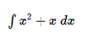

Es un paquete que permite incluir notación matemática en documentos HTML. Funciona en navegadores bajo Windows, Macintosh OS X, Linux y otras variantes UNIX.
jsMath reconoce código TeX, permitiendo así añadir ecuaciones y notación matemática en páginas web. jsMath intenta usar fuentes TeX, y cuando no se dispone de ellas usa imágenes que son escalables y con fuentes Unicode, por lo que a la hora de imprimir no se pierde resolución.
El software se puede descargar de
http://www.math.union.edu/~dpvc/jsMath/
Al ejecutar Matexe se chequea si las fuentes jsMath necesarias están instaladas. En caso negativo el programa pregunta al usuario si desea instalar dichas fuentes y configurar jsMath.
Ejemplo etiqueta jsMath:
<SPAN CLASS="math">\int {x^2+x}{\;dx}</SPAN>
Al visualizar este código en un navegador con jsMath se visualiza la siguiente integral:

Created with the Personal Edition of HelpNDoc: Full-featured Help generator